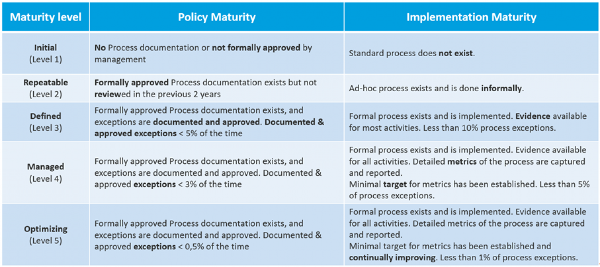

NIS2, Are you in scope?
Belgium's new cybersecurity law entered into force.
Last update: 29/03/2024
The Centre for Cybersecurity Belgium (CCB) has developed a tool to conduct an easy risk assessment resulting in a well-informed selection of the appropriate CyberFundamentals Assurance Level in the context of NIS2. The tool does not impose a specific risk analysis methodology to be used by organisations in their day-to-day management.
Inspired by the EU's NIS2 directive, the CCB conducted generic risk assessments for 17 sectors, particularly taking into account the national or societal consequences of a cyber attack. The results of those risk assessments are included in the tool as default values.
In order to determine the appropriate CyberFundamentals Assurance Level for your organisation you have to downoad the CyFun Selection Tool and go through the following 4 easy steps:
Download the CyFun Selection tool
Set you organisation size by entering the correct number in the cell next to the cell "Organisation Size (L/M/S=3/2/1)”.
To determine your organization size, please use the following criteria:
| Size Number | Size | Size criteria * |
| 3 | Large | 250 or more employees**, OR more than EUR 50 million annual turnover, OR more than EUR 43 million annual balance sheet total. |
| 2 | Medium | In between Small and Large |
| 1 | Small | Less than 50 employees AND less than EUR 10 million annual turnover AND less than EUR 10 million annual balance sheet total |
* The average size of your organisation over the course of the last accounting year. If you are part of a larger organisation (e.g. holding) or have a partner organisation, you have to take their size also into account in your calculation, unless you can prove sufficient independence from their network and information systems.
** Full Time Equivalents of all personnel who worked in or for the organisation in the last accounting year.
Using it’s experience the CCB has selected the following Cyberattack Categories:
For each category of cyberattack, the national, societal or business impact level has been determined in the column “Impact”. You can accept the default impact level or adapt it to reflect your organisation’s specific situation.
When the default value was changed, it is important to document the reasoning behind this.
Using it’s experience the CCB has selected the following Threat Actor Types:
For each Cyber attack category and for each type of Threat Actor, the probability (High, Medium, Low) has been determined whether this type of cyber attack will be carried out by this type of Threat Actor.
The probability criteria are explained in the tab "criteria" in the CyFun Selection Tool.
You can accept the default probability or adapt it to reflect your organization’s specific situation.
When the default value was changed, it is important to document the reasoning behind this.
In the "Criteria" tab of the CyFun selection tool, you can find more information on the meaning of probabilities Low, Medium and High.
The tool automatically generates the appropriate CyberFundamentals Assurance Level in the "CyFun Level" cell.
If your organisation falls into multiple sectors, the highest CyFun Assurance level is applicable.
When the generated "CyFun level" differs from the default "CyFun level", it is important to document the reason why.
Last update: 04/08/2025
Download the Self-Assessment Tool
In support of the ‘CyberFundamentals Framework’ the Centre for Cybersecurity Belgium (CCB) has developed a tool in MS© Excel.
The self-assessment tool takes into account the requirements for assurance level 'Basic', assurance level 'Important' and assurance level 'Essential' of a specific version of the framework as well as the requirements identified in the Conformity Assessment Scheme (CAS). The versions of the CyberFundamentals framework and CAS with which the tool is aligned, are identified in the tool. For this reason, the tool shall not be modified as part of any verification or certification activity.
The self-assessment tool in MS© Excel includes several tabs, each with its own function. Besides introduction, maturity levels and references, there are the tabs with the controls for assurance level ‘Basic’, ‘Important’ and ‘Essential’ (‘details’ tab) and for each assurance level a summary (‘summary’ tab).
The controls are assessed through two angles:
| Policy Maturity: | The Policy Maturity evaluation measures how well your written rules and procedures satisfy the controls of the CyberFundamentals Framework. |
| Implementation Maturity: | The Implementation Maturity evaluation assess how mature your actual operational practices are in relation to the CyberFundamentals Framework. |
The table below shows the different maturity levels and the definitions used to assess maturity from both perspectives:

A sub-category may consist of several controls and each of those controls shall be assessed for documentation and implementation according to the maturity table above. A value from 1 to 5 has to be entered per control in the "details" tab of the applicable assurance level. The tool calculates an arithmetic average for documentation and implementation per sub-category (e.g. ID.AM-1) to then calculate another arithmetic average for documentation and implementation per category (e.g. ID.AM).
These calculated values are visible in the ‘details’ tab of the applicable assurance level.
The ‘summary’ tab for the respective CyberFundamentals assurance levels contains:
Determining conformity with the Conformity Assessment Scheme (CAS)
The overview includes the target scores as determined for the specific assurance levels as described in the CAS. It is against these target scores that the values of the self-assessment are assessed.
When the values colour red one is not conforming to the required maturity level, green shows conformance.
The Conformity Assessment Scheme (CAS) is under discussion with the National Accreditation Body, BELAC.
Function: The CyberFundamentals Framework core is broken into five core functions: Identify, Protect, Detect, Respond, and Recover. The CyberFundamentals Framework core will include a sixth function Govern to stay aligned with NIST CSF 2.0. Functions organize cybersecurity outcomes at their highest level.
Source: based on NIST CSF
Category: Each function is associated with a set of categories that form the basis for actionable cybersecurity processes. Each category provides a structured approach to achieving specific cybersecurity outcomes related to that function.
Source: based on NIST CSF
Subcategory: Categories are further subdivided into subcategories that aim at specific outcomes that help the corresponding category achieve its goals.
Source: based on NIST CSF
Requirement: Need or expectation that cannot be ignored, beyond the exception rules defined in the conformity assessment scheme (CAS).
Source: based on ISO/IEC 27000:2018 (NBN EN ISO/IEC 27000:2020)
Control: A measure that is modifying risk. Controls include any process, policy, device, practice, or other actions that modify risk. In the context of CyberFundamentals conformity and self-assessment, the controls in this framework are also requirements and are therefore used interchangeably.
Source: ISO/IEC 27000:2018 (NBN EN ISO/IEC 27000:2020)
Guidance: Guidance provides examples of concise, action-oriented solutions to help achieve the requirements outcomes. These examples are not enforceable; other ways of achieving the requirements' outcomes are possible and allowed.
Source: based on NIST CSF
The CyberFundamentals Framework, takes its inspiration from the National Institute of Standards and Technology (NIST) Cybersecurity Framework, aka "NIST CSF", but equally integrates the most widely used standards and frameworks across sectors. On top of that, the CyberFundamentals Framework provides tools to deal with the most common cyber threats. There, we can rely on the incidents for which we get the real-time information from the CERT team of the CCB.
Keeping the framework relevant requires it to evolve with frameworks, standards, threats and real-world experience.
In February 2024, the National Institute of Standards and Technology (NIST) updated its Cybersecurity Framework (CSF) and version 1.1, on which the CyberFundamentals Framework is based, evolved to the 2.0 edition.
This means CyFun will also evolve to a new edition. Since the NIS2 legislation will come into force in October 2024, and CyFun will have an important role in this new legislation, we did not think it appropriate to have the evolution to a new edition of the CyberFundamentals Framework still in 2024. We foresee launching the new edition of CyFun during 2025. When launching the new edition of CyFun, the feedback we received on the first version will be incorporated and we will listen to users again by incorporating consultation moments.
The switch will be accompanied by a migration period during which the various organisations can make the transition to this new edition. The CCB will update its existing mappings and publish information, new mappings and possibly tools on this page to make that transition as smooth as possible.